Les sept blocs portent le même nom dans tout le rapport. Les ports, bases et méthodes cités sont ceux du dépôt.
| Bloc | Contenu retenu |
|---|---|
| Plateforme | Angular, API Gateway :8078, Eureka :8420, Config Server :8888 |
| Identité et comptes | keycloak-auth :8079, user :8090 (userdb) |
| Mise en relation | project :8084, offer :8082, contract :8083, freelancia-job :8097 |
| Profil et réputation | portfolio :8086, review :8085, gamification :8088 |
| Exécution de mission | task :8091, planning :8081, chat :8096, meeting :8101 |
| Support | notification :8098, ticket :8094, subcontracting :8110, vendor :8093 |
| Aide à la décision | aimodel :8095, service ML :8102 |
Hiérarchie demandée : module, sous-module, fonctionnalité. La figure ne montre que les deux premiers niveaux. Les fonctionnalités sont les puces.
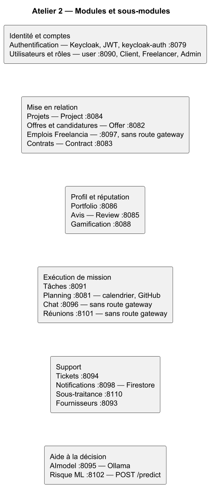
Authentification.
Utilisateurs et rôles.
Projets (Project :8084, base projectdb).
Offres et candidatures (Offer :8082, base gestion_offre_db).
Emplois Freelancia. Publier et consulter une annonce (FreelanciaJob :8097, base freelancia_job_db). Ce service n'a pas de route sur la passerelle.
Contrats. Enregistrer le contrat issu d'une candidature acceptée (Contract :8083, base gestion_contract_db).
Une ligne marquée cible est un objectif de ce rapport. Une ligne marquée constat est une valeur déjà présente dans la configuration.
| Exigence | Quantification | Statut |
|---|---|---|
| Temps de réponse des API métier, hors intelligence artificielle | ≤ 2 s au 95e percentile | Cible |
| Timeout global du client HTTP de la passerelle | 4 h (routes comprises, à cause du LLM local) | Constat |
| Timeout de la route planning | 30 s | Constat |
| Timeout de la route portfolio | 120 s | Constat |
| Timeout des routes IA (tâches AI et AImodel) | 14 400 000 ms, soit 4 h | Constat |
| Réplicas de l'API Gateway et du frontend | 2 réplicas chacun, maxUnavailable = 0 | Constat |
| Taille de corps à l'ingress | 50 Mo | Constat |
| Mémoire du codec de la passerelle | 10 Mo | Constat |
| Lecture proxy de l'ingress | 3 600 s | Constat |
| Authentification | OAuth2 / JWT, realm smart-freelance, rôles Client, Freelancer, Admin | Constat |
| Origines CORS du profil local | http://localhost:4200 et http://127.0.0.1:4200 | Constat |
| Données relationnelles | Une base MySQL par microservice. Notification utilise Firestore, pas MySQL. | Constat |
| Accès direct aux microservices | Refusé sans l'en-tête X-Internal-Gateway posé par la passerelle | Constat |
Chaque bloc est fermé. Les noms qui suivent sont les interfaces qu'il fournit.
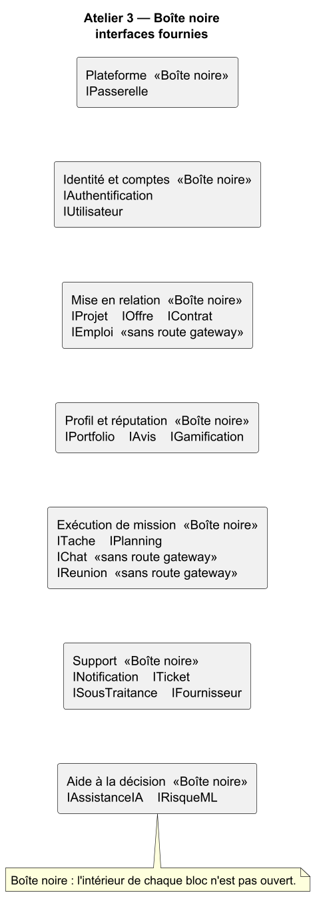
La passerelle retire le premier segment d'URL (StripPrefix=1). Les flèches de la figure 4 n'existent que si le code contient l'appel.
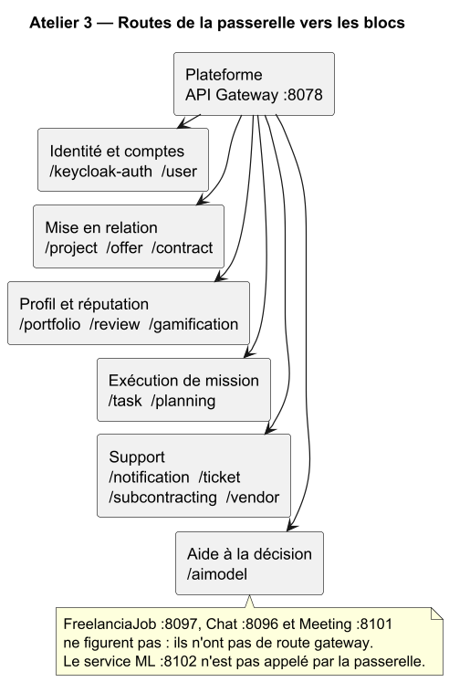
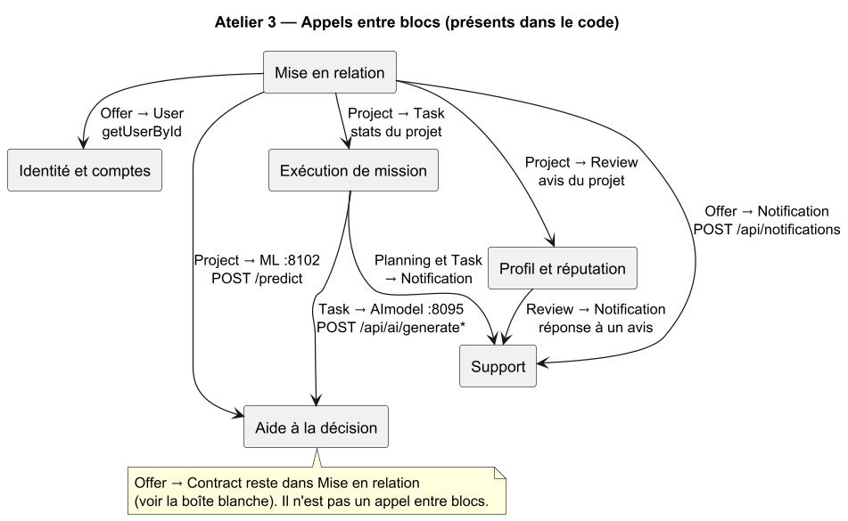
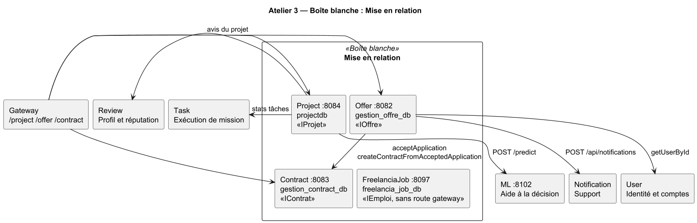
Seuls Project et Offer sont ouverts jusqu'aux classes. Les méthodes sont celles des types du dépôt. Les autres blocs restent au niveau composant.
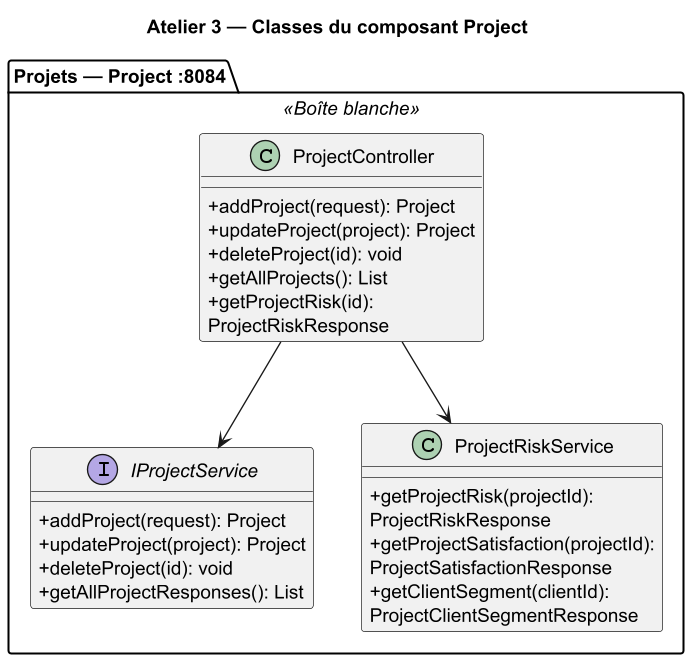
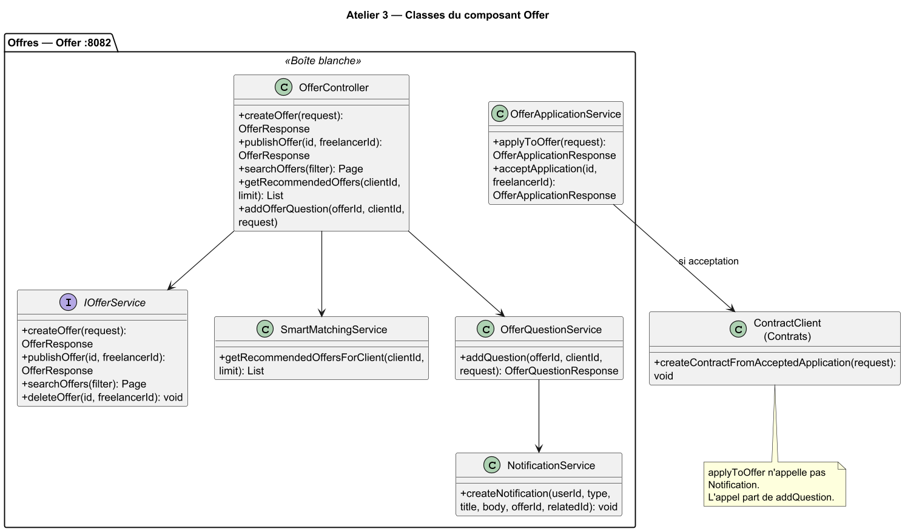
Les acteurs n'entrent que par Plateforme. Keycloak, MySQL, Firebase, Ollama, GitHub, Google Calendar et Google Translate sont hors des sept blocs.
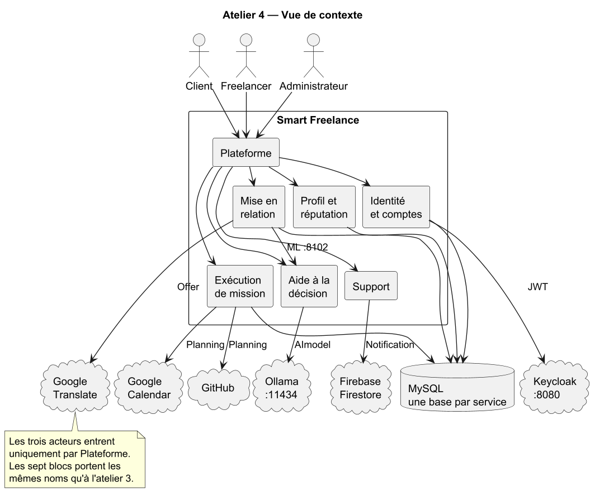
Le schéma décrit le dossier k8s/, namespace smart-freelance. Les nœuds portent les noms des blocs de l'atelier 3. Keycloak et Ollama sont dans le cluster, mais hors de ces blocs métier.
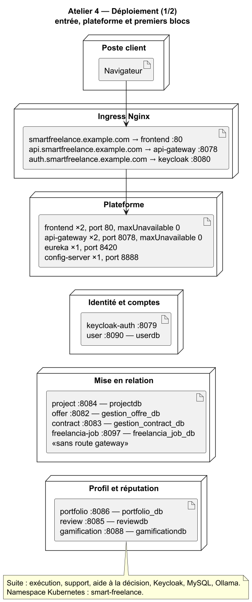
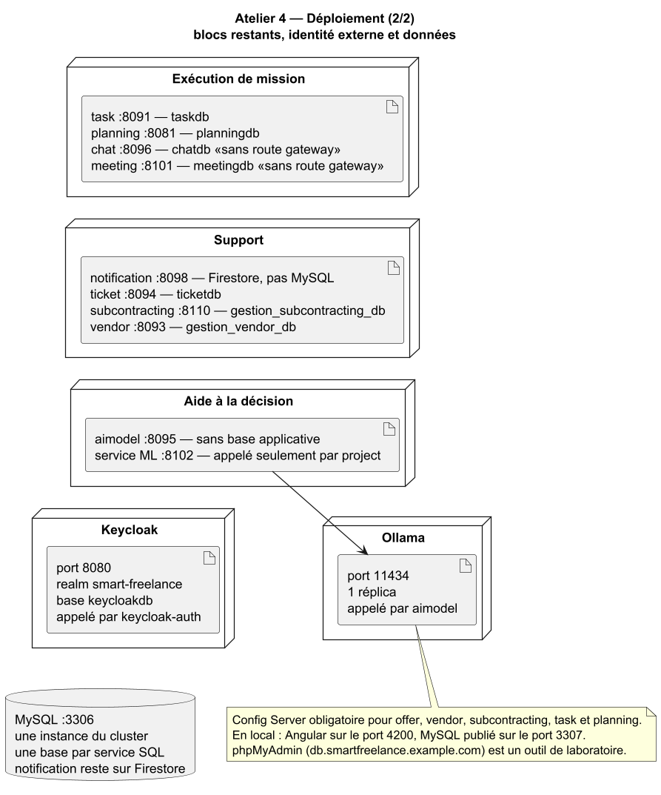
| Service | Port | Préfixe gateway | Donnée |
|---|---|---|---|
| Eureka | 8420 | — | — |
| Config Server | 8888 | — | obligatoire pour offer, vendor, subcontracting, task, planning |
| API Gateway | 8078 | — | — |
| keycloak-auth | 8079 | /keycloak-auth | Keycloak :8080 |
| user | 8090 | /user | userdb |
| planning | 8081 | /planning | planningdb |
| offer | 8082 | /offer | gestion_offre_db |
| contract | 8083 | /contract | gestion_contract_db |
| project | 8084 | /project | projectdb |
| review | 8085 | /review | reviewdb |
| portfolio | 8086 | /portfolio | portfolio_db |
| gamification | 8088 | /gamification | gamificationdb |
| task | 8091 | /task | taskdb |
| vendor | 8093 | /vendor | gestion_vendor_db |
| ticket | 8094 | /ticket | ticketdb |
| aimodel | 8095 | /aimodel | Ollama, pas de base applicative |
| chat | 8096 | aucune | chatdb |
| freelancia-job | 8097 | aucune | freelancia_job_db |
| notification | 8098 | /notification | Firestore |
| meeting | 8101 | aucune | meetingdb |
| service ML | 8102 | aucune | appel serveur, depuis project |
| subcontracting | 8110 | /subcontracting | gestion_subcontracting_db |
Deux scénarios. Les lignes de vie utilisent les blocs de l'atelier 3.
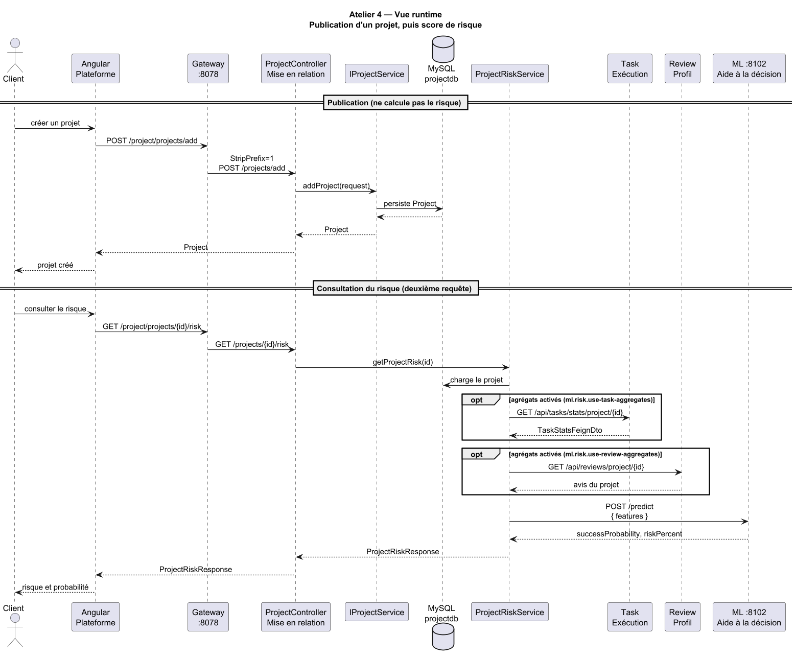
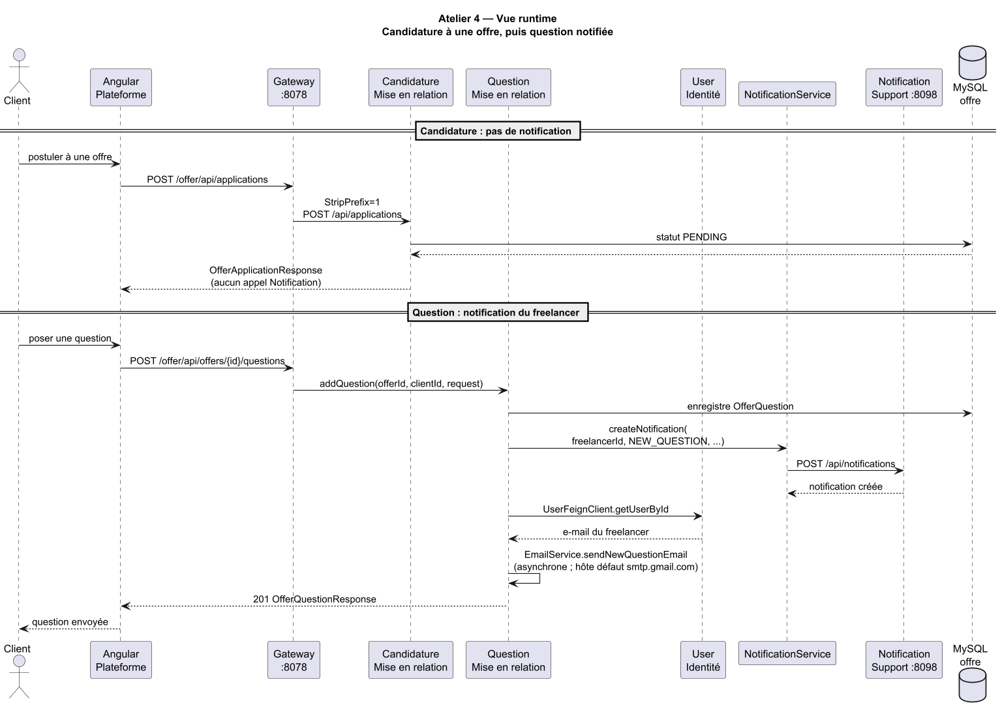
Les lifelines « Candidature » et « Question » sont OfferApplicationService et OfferQuestionService, dans le bloc Mise en relation. La base de la figure 12 est gestion_offre_db.